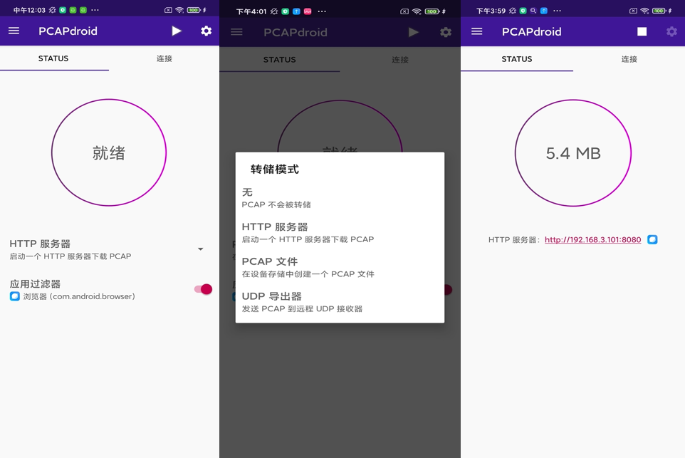
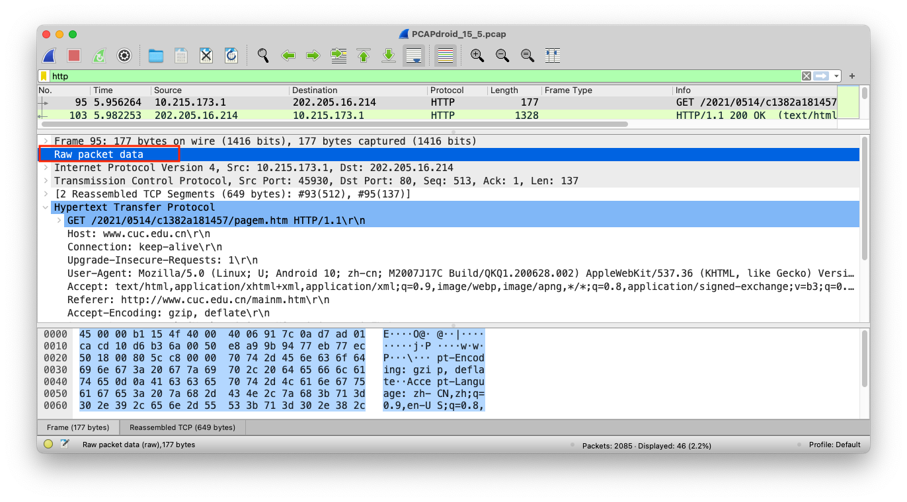
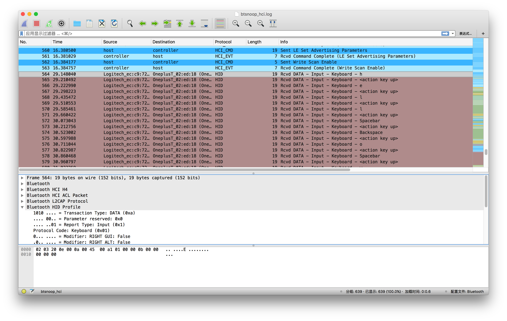

黄玮
AndroidManifest.xml静态分析是指在 不运⾏代码 的情况下，采用 词法分析、语法分析 等各种技术⼿段对 程序⽂件 进⾏扫描从⽽⽣成程序的 逆向代码（包括 反汇编代码 或 反编译代码），然后阅读 逆向代码 来掌握程序功能和理解程序原理的⼀种技术。
| 高级语言源代码 | 汇编代码 | 机器指令代码 | |
|---|---|---|---|
| 汇编 assemble | - | 源代码 | 目标代码 |
| 反汇编 disassemble | - | 目标代码 | 源代码 |
| 编译 compile | 源代码 | - | 目标代码 |
| 反编译 decompile | 目标代码 | - | 源代码 |
Java / Kotlin / C/C++Smali
smali 是面向 人类阅读 的文本格式代码，是符合人类语言习惯的语法与 助记符smali 翻译成英语对应 complier ，baksmali 翻译成 decompilerDEX 字节码，也称为 Dalvik 字节码
Dalvik 字节码 是面向 机器执行 的二进制格式代码以第六章的
Hello World v2应用为例
JAR 格式 ，是一种特殊的 ZIP 格式
IntentFilter 声明Dalvik 字节码（也称为 Dex 字节码） 文件ART（Android runtime）是 Dalvik 的后续升级版本，自 Android 5.0 (API level 21) 引入.xml 是二进制格式，无法直接阅读# aapt 位于 $ANDROID_HOME/build-tools/$platform_version/aapt
# aapt: Android Asset Packaging Tool
# 查看 aapt 的使用帮助
aapt
# 列举 APK 内所有资源文件的路径
aapt l app-release.apk
# -a print Android-specific data (resources, manifest) when listing
# aapt list -v app-release.apk 等价于 unzip -l -v app-release.apk
aapt d xmltree app-release.apk AndroidManifest.xml
aapt d xmltree app-release.apk res/layout/activity_main.xml
aapt d xmltree app-release.apk res/layout/activity_display_message.xmlJanus 漏洞（CVE-2017-13156）: 篡改 APK 文件的同时可以通过系统的签名校验
DEX 文件，并将正常 APK 文件追加在该 DEX 文件尾部APK 文件被成功安装到系统里
End of Central Directory 标记定位 Central Directory 范围，从而确定压缩包内所有文件的起始位置APK 文件时，ART 从文件头部开始搜索魔术字符串：发现是 dex 则认为当前是一个 DEX 文件，可以直接运行APK Sig Block 42ID=0x7109871a （大端序）的键值对区块中ID=0xf05368c0 （大端序）的键值对区块中<apk name>.apk.idsig
<apk name>.apk.idsig# 验证目标 APK 使用的签名算法
apksigner verify --verbose app-release.apk
# Verifies
# Verified using v1 scheme (JAR signing): true
# Verified using v2 scheme (APK Signature Scheme v2): true
# Verified using v3 scheme (APK Signature Scheme v3): false
# Verified using v4 scheme (APK Signature Scheme v4): false
# Verified for SourceStamp: false
# Number of signers: 1
# 在 APK 文件中搜索 0x1a870971（小端序）
xxd -p app-release.apk | tr -d '\n' | grep '1a870971' -c
# 1
# 仅使用 v2 签名算法，未使用 v1 签名算法时
apksigner verify --verbose app-release.apk | head -n 10
# DOES NOT VERIFY
# ERROR: No JAR signatures
# 手动创建一个使用 v3 签名的 APK
# ref: https://stackoverflow.com/questions/59248088/how-can-i-sign-my-app-with-apk-signature-scheme-v3
# 0. 使用 29.0.2+ 的 SDK build-tools
# 1. 在 Android Studio 中 Build-> Build Bundles(s)/APK(s)-> Build APK(s) 生成一个未签名版的 APK 文件
# 2. 对齐未签名 APK 文件 app-debug.apk 为 app-debug-unsigned.apk
zipalign -v -p 4 app-debug.apk app-debug-unsigned.apk
# 3. 使用证书签发应用
apksigner sign --ks <path/to/keystore.jks> --out app-release-v3.apk app-debug-unsigned.apk
# 验证目标 APK 使用的签名算法
apksigner verify --verbose app-release.apk
# Verifies
# Verified using v1 scheme (JAR signing): true
# Verified using v2 scheme (APK Signature Scheme v2): true
# Verified using v3 scheme (APK Signature Scheme v3): true
# Verified using v4 scheme (APK Signature Scheme v4): false
# Verified for SourceStamp: false
# Number of signers: 1
# 在 APK 文件中搜索 0xc06853f0（小端序）
xxd -p app-release-v3.apk | tr -d '\n' | grep 'c06853f0' -c
# 1
xxd -p app-release-v3.apk | tr -d '\n' | grep '1a870971' -c
# 1# MANIFEST.MF 中资源文件 SHA-256 计算方法
openssl dgst -binary -sha256 classes.dex | openssl base64
# mRATF5pAo8YStNMeTVazJ0lY8tk07WrU+7kE37Ilezo=
grep classes.dex META-INF/MANIFEST.MF -A 1
# Name: classes.dex
# SHA-256-Digest: mRATF5pAo8YStNMeTVazJ0lY8tk07WrU+7kE37Ilezo=MANIFEST.MF 文件中对应的部分（包含空行）先 SHA-256 再 BASE64 处理后的结果0d0a0d0ahead -n 4 CERT.SF
# Signature-Version: 1.0
# Created-By: 1.0 (Android)
# SHA-256-Digest-Manifest: RJvtXkwFOU6I8baArGxnClXjXbJeUIA6vVoxwARCMPk=
# X-Android-APK-Signed: 2
# 上述 X-Android-APK-Signed 说明该 APK 同时使用了 v1 和 v2 版签名算法
openssl dgst -binary -sha256 META-INF/MANIFEST.MF| openssl base64
# RJvtXkwFOU6I8baArGxnClXjXbJeUIA6vVoxwARCMPk=
head -n 3 META-INF/CERT.SF
# Signature-Version: 1.0
# Created-By: 1.0 (Android)
# SHA-256-Digest-Manifest: RJvtXkwFOU6I8baArGxnClXjXbJeUIA6vVoxwARCMPk=
# 计算指定文件在 CERT.SF 中的散列值
cat MANIFEST.MF| grep -A 2 classes.dex > classes.dex.mainfest
openssl dgst -binary -sha256 classes.dex.mainfest| openssl base64
# 5rt4DAeW33qpit8mZ7+2uVsk+INcHQc48nzP4aeRTrM=
grep classes.dex -A 2 CERT.SF
# Name: classes.dex
# SHA-256-Digest: 5rt4DAeW33qpit8mZ7+2uVsk+INcHQc48nzP4aeRTrM=# 用 ASN.1 语法解析 CERT.RSA
openssl asn1parse -in CERT.RSA -inform DER -i -dump
# 用 pkcs7 语法解析 CERT.RSA
openssl pkcs7 -in CERT.RSA -inform der -print_certs -text.apk 文件.apk 文件Dalvik 字节码 反汇编为 smali 代码
baksmali（解包）: .dex –> .smalismali 代码汇编为 Dalvik 字节码
smali （打包）: .smali –> .dexVS Code 的一站式 Android 逆向工具汇编
VS Code 插件常规安装方式apk 文件进行分析时会自动检查并下载安装缺失的第三方依赖工具
apktool.yml – APKLab: Rebuild the APKdefinition）和引用（reference）Dalvik 字节码的助记符。
寄存器 的汇编语言风格# 头信息
# 类的声明、父类信息、源代码文件名
.class public Lcuc/edu/cn/MainActivity;
.super Landroidx/appcompat/app/AppCompatActivity;
.source "MainActivity.java"
# 定义一个 public static final 成员变量 EXTRA_MESSAGE ，其数值类型为 java.lang.String
# static fields
.field public static final EXTRA_MESSAGE:Ljava/lang/String; = "com.example.myfirstapp.MESSAGE"
# 默认构造方法
# direct methods
.method public constructor <init>()V
.locals 0
.line 12 // 对应 Java 源代码行号
invoke-direct {p0}, Landroidx/appcompat/app/AppCompatActivity;-><init>()V
return-void
.end method
# virtual methods
.method protected onCreate(Landroid/os/Bundle;)V
.locals 0
.line 18
invoke-super {p0, p1}, Landroidx/appcompat/app/AppCompatActivity;->onCreate(Landroid/os/Bundle;)V
const p1, 0x7f0b001d
.line 19
invoke-virtual {p0, p1}, Lcuc/edu/cn/MainActivity;->setContentView(I)V
return-void
.end method
.method public sendMessage(Landroid/view/View;)V
.locals 2
.line 24
new-instance p1, Landroid/content/Intent;
const-class v0, Lcuc/edu/cn/DisplayMessageActivity;
invoke-direct {p1, p0, v0}, Landroid/content/Intent;-><init>(Landroid/content/Context;Ljava/lang/Class;)V
const v0, 0x7f08006d
.line 25
invoke-virtual {p0, v0}, Lcuc/edu/cn/MainActivity;->findViewById(I)Landroid/view/View;
move-result-object v0
check-cast v0, Landroid/widget/EditText;
.line 26
invoke-virtual {v0}, Landroid/widget/EditText;->getText()Landroid/text/Editable;
move-result-object v0
invoke-virtual {v0}, Ljava/lang/Object;->toString()Ljava/lang/String;
move-result-object v0
const-string v1, "com.example.myfirstapp.MESSAGE"
.line 27
invoke-virtual {p1, v1, v0}, Landroid/content/Intent;->putExtra(Ljava/lang/String;Ljava/lang/String;)Landroid/content/Intent;
.line 28
invoke-virtual {p0, p1}, Lcuc/edu/cn/MainActivity;->startActivity(Landroid/content/Intent;)V
return-void
.end method局部变量寄存器（local register）从 v0 开始，序号顺序增长对应余下寄存器，该类寄存器数量由 .locals 定义32 bit 长度数据，64 bit 长度的 Double 和 Long 类型数据需要占用 2 个寄存器# 是行注释符号.prologue 表示代码开始参数寄存器（parameter register）
p0 开始，指向当前方法所属对象(相当于Java 代码中的 this), p1 开始表示方法的第一个参数，序号顺序增长对应余下参数this 引用，所以不存在 p0.locals 定义，出现在方法定义的第一行.registers 定义，即 参数寄存器 和 非参寄存器 之和| 助记符 | Java 数据类型 |
|---|---|
| D | double，占用2个32位寄存器 |
| J | long，占用2个32位寄存器 |
| V | void (仅用于方法返回值) |
| I | int |
| Z | bool |
| B | byte |
| S | short |
| C | char |
| F | float |
| 助记符 | Java 数据类型 |
|---|---|
| Lpackage/name/ObjectName; | 对象 |
| [primaryType | 例如 [I 对应 int[] |
| [[primaryType | 例如 [[I 对应 int[][] |
| [Lpackage/name/ObjectName; | 例如 [Ljava/lang/String; 对应 java.lang.String[] |
# 定义
Lpackage/name/ObjectName;->FieldName:FieldType
# 举例-1
# Java 源代码 public boolean f1;
public f1:Z
# 举例-2
# Java 源代码 public int f2;
public f2:I
# 举例-3
# Java 源代码 public String f3;
public f3:Ljava/lang/String;# 对象名->方法名(形参类型1形参类型2...形参类型n)方法返回值类型
# 以下代码对应 Java 源代码 boolean package.name.ObjectName.MethodName(int x, int y, int z)
Lpackage/name/ObjectName;->MethodName(III)Z
# 调用对象实例化方法对应 MethodName 为 <init>| 指令 | 说明 |
|---|---|
| invoke-virtual | 最常见的访问指令，不支持访问私有、静态、final、构造方法，第一个参数通常是 p0 |
| invoke-super | 访问父类中的方法 |
| invoke-direct | 访问私有方法或构造方法 |
| invoke-static | 访问静态方法 |
| invoke-interface | 访问接口方法 |
| 指令 | 说明 |
|---|---|
| return-void | 无返回值 |
| return v1 | 返回值保存到寄存器 v1 |
| return-object v1 | 返回对应引用到寄存器 v1 |
| return-wide v1 | 返回 double word 结果到寄存器 v1 |
# 一般的指令格式
[op]-[type](可选)/[位宽，默认4位] [目标寄存器],[源寄存器](可选)
# 实例-1
# 将 v2 中的值移入到 v1 寄存器（4位，支持 int ）
move v1,v2
# 实例-2
# 将 16 位的 v2 寄存器中的值移入到 4 位的 v1 寄存器
move-wide/from16 v1,v2
# 实例-3
# 将最近一次方法返回结果对象指针保存到 v0 寄存器
move-result-object v0
# 实例-4
# 将 v8 寄存器中的对象指针保存到 v1 寄存器
move-object v1, v8软件逆向分析中的动态分析指的是在 不依赖于 软件源代码的情况下，将目标程序 运行起来，在运行中分析程序执行行为和结果。
白盒动态分析 。这种条件下的动态分析体验和正向开发过程中的 单步调试 体验基本一致。灰盒动态分析。黑盒动态分析。顺序查看法通常是从 用户界面主入口 Activity 或其他启动代码入手分析，逐行向下分析，掌握软件的执行流程。
这种分析方法在病毒分析时经常用到：大多数病毒都会实现开机自启动或随常用应用软件的启动而自动加载执行。
用户界面主入口 Activity如果未对应用的 Activity 之一声明 MAIN 操作 或 LAUNCHER 类别，那么 应用图标将不会出现在应用的主屏幕列表中 。
<activity android:name=".MainActivity" android:label="@string/app_name">
<intent-filter>
<action android:name="android.intent.action.MAIN" />
<category android:name="android.intent.category.LAUNCHER" />
</intent-filter>
</activity>用户界面主入口 Activity根据 AndroidManifest.xml 中的 package 定义，即可定位完整的 主 Activity 类名。
<?xml version="1.0" encoding="utf-8"?>
<manifest
xmlns:android="http://schemas.android.com/apk/res/android"
android:versionCode="2"
android:versionName="10.0"
android:compileSdkVersion="30"
android:compileSdkVersionCodename="11"
package="cn.edu.cuc.misdemo"
platformBuildVersionCode="2"
platformBuildVersionName="1092616192.000000">
<!-- ... -->
</manifest>关键信息
字符串 形式，也可能是 图片 文件等源代码 或 逆向代码 中搜索可能的硬编码上述 关键信息strings.xml 文件或者硬编码到程序代码中
id 的形式访问，只需要在反汇编代码中搜索字符串 id 值即可找到调用代码处UI 和 UE 实现技术原理推测用到了 Android SDK 中提供的哪些相关 API 函数注册失败 错误提示信息可能是调用的 Toast.MakeText().Show() 方法，在反汇编代码中直接搜索 Toast 应该很快能定位相关调用代码Toast 在程序中被多次调用的话，可能需要分析人员逐个阅读核对apk 文件的 smali 反汇编代码，加入打印语句输出，然后重新打包回 apk 文件安装运行，配合 LogCat 查看程序执行到特定点时的（变量和关键数据结构）状态数据插桩 分析技术
插桩 instrumentation栈跟踪法 是一种特殊的 代码注入法 ，同时也属于 插桩 分析技术栈跟踪信息输出 方法调用代替上述例子中使用的 打印语句 注入到目标程序的 反汇编代码打印语句 注入要详细地多// Java 调用栈跟踪方法
new Exception("print trace").printStackTrace();# 对应上述 Java 代码的 smali 反汇编代码
new-instance v0, Ljava/lang/Exception;
const-string v1, "print trace";
invoke-direct {v0, v1}, Ljava/lang/Exception;-><init>(Ljava/lang/String;)V
invoke-virtual {v0}, Ljava/lang/Exception;->printStackTrace()VprintStackTrace() 被执行期间所有被调用过的方法# ref: https://developer.android.com/studio/run/emulator-commandline
# AVD_NAME 可以通过 Android Studio 菜单 Tools -> AVD Manager 打开 Device Manager
# 第 2 列 Name 对应 AVD_NAME
$ANDROID_HOME/emulator/emulator @AVD_NAME -tcpdump dumpfile.pcap
# 如果遇到启动模拟器后 Android 11 系统无法上网的情况需要手动指定一个宿主机可用的域名解析服务器 IP
# ref: https://developer.android.com/studio/run/emulator-networking#dns
$ANDROID_HOME/emulator/emulator @AVD_NAME -dns-server 114.114.114.114 -tcpdump dumpfile.pcapEvil Twin 实验思路，电脑自建无线网络、手机连入该网络pcap 文件生成过程
TCP 流量转发 功能，将所有 TCP 流量转发到指定的 SOCKS5 代理 ，可以进行 HTTPS/TLS 流量解密
系统全局 VPN 捕获流量方式的局限性：只有「网络层」、「传输层」和「应用层」真实数据，无法获取「链路层」和「物理层」数据
Android 7.0 (Google APIs) 镜像启动模拟器可以获得 root 权限# 以 Android 7 x86 模拟器环境为例
# 假设目标模拟器环境的设备名称为 emulator-5554
# x86 版 tcpdump for Android
adb -s emulator-5554 push tcpdump-x86 /data/local/tmp/
adb -s emulator-5554 shell
# 以下是在 Android shell 环境中执行的命令
# 切换到 root 用户身份
su
chmod +x /data/local/tmp/tcpdump-x86
# 查看使用帮助
/data/local/tmp/tcpdump-x86 --help
# tcpdump-x86 version 4.9.2
# libpcap version 1.9.0-PRE-GIT (with TPACKET_V3)
# Usage: tcpdump-x86 [-aAbdDefhHIJKlLnNOpqStuUvxX#] [ -B size ] [ -c count ]
# [ -C file_size ] [ -E algo:secret ] [ -F file ] [ -G seconds ]
# [ -i interface ] [ -j tstamptype ] [ -M secret ] [ --number ]
# [ -Q in|out|inout ]
# [ -r file ] [ -s snaplen ] [ --time-stamp-precision precision ]
# [ --immediate-mode ] [ -T type ] [ --version ] [ -V file ]
# [ -w file ] [ -W filecount ] [ -y datalinktype ] [ -z postrotate-command ]
# [ -Z user ] [ expression ]在 Android 4.4 及更高版本中，您可以手动收集 BTSnoop 日志（类似于 RFC 1761 中的信息收集格式）。这些日志可捕获主机控制器接口 (HCI) 数据包。对于大多数 Android 设备，这些日志都存储在 data/misc/bluetooth/logs 中
/data 目录需要 root 权限
{kind=link}
{kind=link}